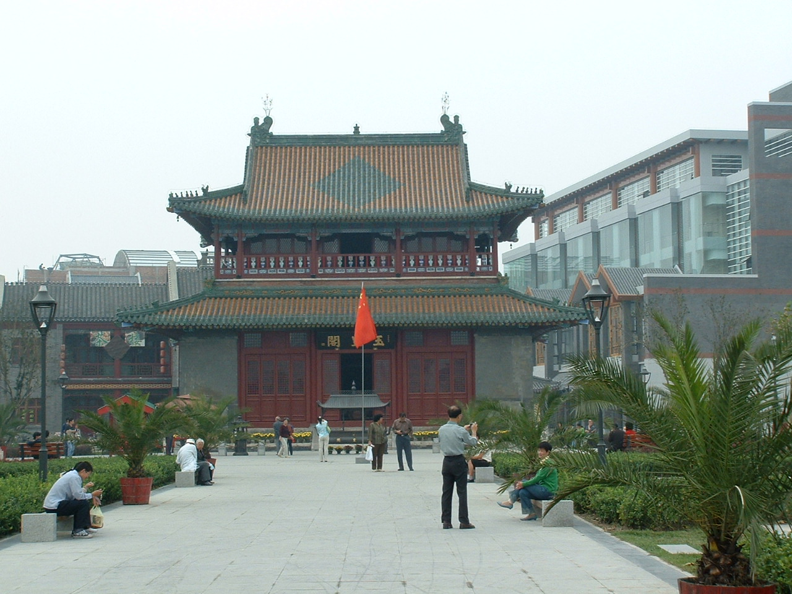

古阁遗韵与道家营造
深度探秘玉皇阁清虚高阁、道教彩绘与漕运源流
重檐九脊歇山式木构明楼
玉皇阁建筑群现存的核心主体为清虚阁。全阁建于砖砌高台之上，上下两层，通高约14.5米。
上层屋顶为重檐歇山九脊顶，绿琉璃瓦剪边，四面檐下施斗栱，二层周匝设回廊栏杆。古代文人常登临此阁，东眺海河浩荡帆影，南看津门万家灯火，被誉为“重门洞开，爽气西来；飞楼杰阁，下瞰平波”。

津门水神与玉皇崇拜
玉皇阁紧邻三岔河口，古时是京杭大运河北端与海河交汇的核心港埠。南来北往的粮船、盐商船队均在此聚集泊岸。
船工与商贾起航离津前，必先进玉皇阁叩拜天帝、水神，祈求风调雨顺、行船平安。每逢正月初九“天公诞”，香客云集，形成津沽盛极一时的传统庙会盛景。
运河咽喉水上福地
“水陆咽喉，商贾辐辏。”玉皇阁不仅是道教修真之所，更是记录天津从漕运聚落向近代工商业都市演进的见证。
精美斗栱与太极八卦藻井
清虚阁一层与二层梁柱之间，绘有典型的明清旋子彩画与苏式道教神仙壁画。阁内顶部施八卦藻井，雕琢云鹤仙纹，构思奇巧。
门窗隔扇上的木雕与基座石雕云雷纹相得益彰，体现了中国传统道家“天人合一”、“道法自然”的宇宙观与建筑装饰艺术的高峰。
道教营造法式
结合北方厚重砖石基座与南方轻巧通透木廊，具有鲜明的明代官式建筑与民间营造结合的典型风貌。
古文化街北端文化明珠
新中国成立后，天津市政府多次拔专款对清虚阁实施“落架大修”，严格遵循“修旧如旧”的文物保护原则，排除了木构糟朽隐患。
如今，玉皇阁与天后宫、古文化街连缀成线，构成天津传统民俗文化游览区的南北双璧，向海内外游客生动呈现古卫城的道风仙骨。
古建筑修缮典范
保存了明洪武年间的砖砌城台式建筑基础与清代重檐，是研究中国古代高台建筑的实物标本。
六百年香火沿革
敕命始建玉皇阁，供奉昊天金阙至尊玉皇大帝，为天津有确切纪年最早的道观之一。
敕建玉皇阁，供奉玉皇大帝。
明初敕建地方官吏与盐商巨贾多次增资扩建，增设山门、旗杆、过厅与配殿，殿宇巍峨，香火冠绝津门。
天津市人民政府实施抢救性大修，加固清虚阁梁架木柱，被列为市级重点文物保护单位。
纳入古文化街国家5A级旅游景区整体规划，成为三岔河口与运河文旅研学的重要节点。
📍 游览攻略与实用指南
门票：免费参观
开放时间：09:00 - 16:30（周一例行修整闭馆）
地址：天津市南开区东门外大街三岔河口南侧（古文化街北端）
地铁：地铁2号线【东南角站】转乘公交或步行约15分钟
建议与天后宫、古文化街北口连缀游览，用时约40分钟
拍照建议：下午3-5点夕阳余晖斜照重檐歇山顶，色彩尤为明艳